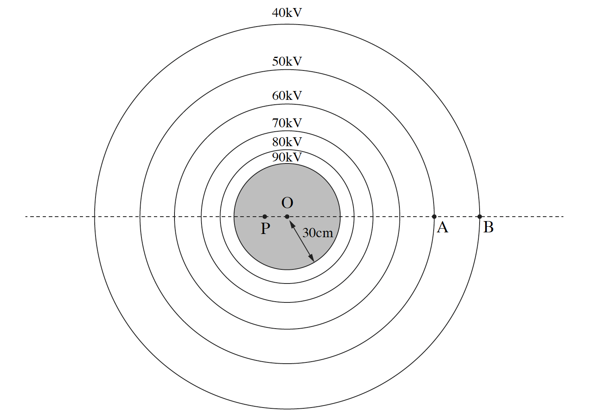

שאלה 1
בתרשים שלפניכם מוצג כדור מוליך ("קליפה כדורית") הטעון במטען חיובי Q, וכמה קווים שווי פוטנציאל שעל כל אחד מהם
רשום ערך הפוטנציאל המתאים לו.
נתון: רדיוס הכדור הוא R = 30cm, והפוטנציאל על פניו הוא 90,000V. הפוטנציאל באינסוף נבחר להיות אפס.
בשאלה כולה יש להניח כי השפעת כוח הכבידה זניחה וכי התפלגות המטען על פני הכדור נשארת אחידה.

הנקודה O היא מרכז הכדור, הנקודה P נמצאת במרחק 12cm משמאל למרכז הכדור, הנקודה A נמצאת על הקו שערכו 50,000V,
והנקודה B נמצאת על הקו שערכו 40,000V (ראו תרשים).
חשבו את המרחק AO. (9 נקודות)
חשבו את השדה החשמלי בנקודה A (גודל וכיוון). (7 נקודות)
מהו גודל השדה החשמלי בנקודה P ?
מהו הפוטנציאל בנקודה P ?
(5 נקודות)
גוף קטן 1 שמסתו m1 ומטענו q1, מוחזק במנוחה בנקודה A. מעניקים לגוף מהירות שגודלה v = 1.5 ms וכיוונה ימינה.
במהלך תנועתו של גוף 1 ימינה הוא חולף בנקודה B.
נתון: q1 = -1.2 · 10-8 C, m1 = 4 · 10-4 kg.
חשבו את גודל המהירות של גוף 1 בנקודה B. (8 נקודות)
גוף קטן 2 שמסתו m2 ומטענו q2, מוחזק במנוחה בנקודה A. מעניקים גם לגוף 2 מהירות שגודלה v = 1.5 ms אך הפעם כיוונה שמאלה.
במהלך תנועתו של גוף 2 שמאלה הוא חולף בנקודה C (שאינה מסומנת בתרשים) במהירות שגודלה שווה לגודל המהירות שחישבתם בסעיף ד.
נתון: q2 = -q1, m2 = m1.
קבעו אם המרחק AC שווה למרחק AB, קטן ממנו או גדול ממנו. נמקו את קביעתכם. (4.33 נקודות)